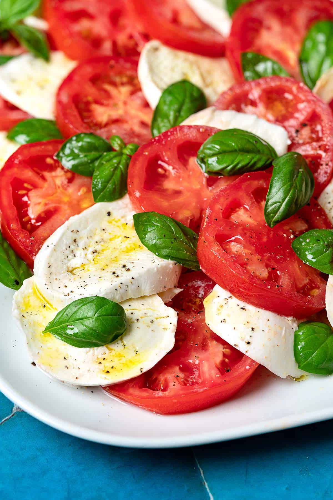

Caprese Salad

This is a traditional yet simple Italian salad
Yet this dish consists of simple and limited ingrediants this dish is vibrant
in both presintation and flavore because the ingrediants within are flavorfull by there lonthsome.
Ingredients
- Tomatoes
- Mozzarella Cheese
- Basil Leaves
- Extra Virgin Olive Oil
- Balsamic Vinegar
- Salt
- Black Pepper
Garnish
- Balsamic Glaze
- Flaky Sea Salt
Instructions
- Prepare the Ingredients: Wash and dry the tomatoes, basil leaves, and mozzarella cheese. Slice the tomatoes and mozzarella cheese into rounds.
- Assemble the Salad: Arrange the tomato and mozzarella slices on a serving platter, alternating between them and overlapping slightly. Tuck the fresh basil leaves in between the slices.
- Season: Drizzle the assembled salad with extra virgin olive oil. If using, drizzle with balsamic vinegar or balsamic glaze. Season with flaky sea salt and freshly ground black pepper to taste.
- Garnish: Optionally, garnish the salad with additional chopped or torn basil leaves, a drizzle of balsamic glaze, and a sprinkle of flaky sea salt and black pepper.
- Serve: Serve the Caprese Salad immediately as a refreshing appetizer or side dish.